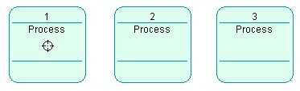
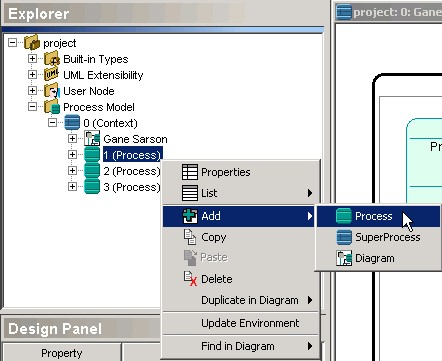
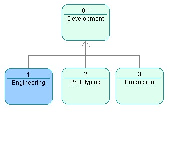
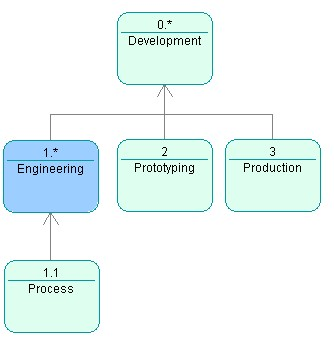
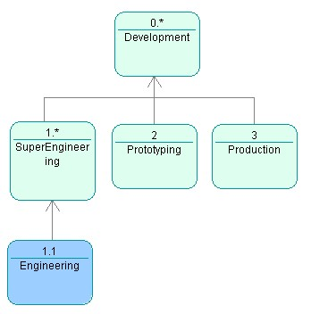

While modeling business processes, Open ModelSphere allows you to make top-down design, bottom-up design, or a mixture of the two!
Top-down Design:
This is the natural and most-used way to design business processes: the main processes are created first, and then each main process is decomposed in subprocesses, decomposed in turn in deeper subprocesses.
The
simplest way to perform top-down design is to create the main processes
(numbered 1, 2 and 3), then use the target tool to decompose a main
process
into a sub process diagram. The decomposed process is denoted
with
a star (*).
Just
before the decomposition:

Right after the decomposition:
Processes created under the decomposed process will be numbered 1.1, 1.2, 1.3 and so on.
Another equivalent way the to create subprocesses under a given process is to select the main process node in the explorer, right-click the node to get the pop-up menu and select the Add->Process operation. This will create a process numbered 1.1 under the process 1.

Bottom-up
Design:
Bottom-up design can be appropriate when you want to begin
modeling
with
well-defined modular subprocesses that are to be aggregated for a
modified workflow.
Select
a node corresponding to the Process 1 in the explorer, right-click the
node to get the pop-up menu and select the Add->Super Process
operation.
The current Process 1 will be renumbered 1.1, and a new superprocess 1
will be created above the selected process.
Mixing top-down and bottom-up designs:
The following chart describes the resulting process model
after
adding
a process to the Engineering process, after adding a superprocess to
the
Engineering process, and after adding a superprocess to the top-level
Development
process.
| Original process model.  |
Original process model after adding a process to
Engineering.
Process 1.1 is created and placed under Engineering.  |
| Original process model after adding a superprocess to
Engineering.
A new process called SuperEngineering is created and takes the previous
position of Engineering. Engineering is pulled at a deeper level.  |
Original process model after adding a superprocess to
Development.
A new process called SuperDevelopment is created and placed over
Development.
All the other processes are pulled at a deeper level.  |